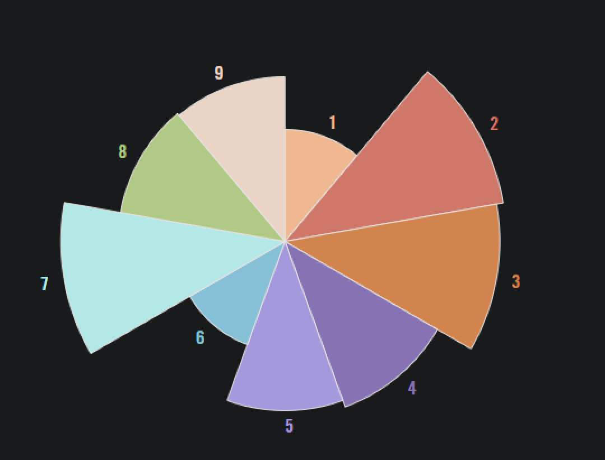

Enneagram¶
Essentie¶
Het Enneagram is een persoonlijkheids model, dat individuen categoriseerd in 9 verschillende categoriën.
Het is een benadering, dat inzicht biedt hoe deze typen zich gedragen, denken en voelen in verschillende situaties.
Mijn uitslag¶

- Type 7 - De Levensgenieter: 98%
Enthousiast, avontuurlijk en gericht op plezier en een vol leven met nieuwe ervaringen. - Type 2 - De Helper: 97%
Empatisch, betrokken en gericht op het ondersteunen van anderen. - Type 3 - De Presteerder (Verkoper): 94%
Gedreven door succes, en het bereiken van doelen, groot en klein. Zelfs het proces is plezierig. - Type 4 - De Romanticus: 77%
Gevoelig, creatief en altijd opzoek naar het authentieke en unieke. - Type 5 - De Denker (Waarnemer): 74%
Nieuwsgierig en geïnteresseerd in kennis en diepgaande inzichten. - Type 8 - De Bepaler (Baas): 73%
Krachtig, beschermend en gericht op controle en onafhankelijkheid. - Type 9 - De Bemiddelaar: 72%
Harmonieus, vredelievend en gericht op het verbinden van mensen. - Type 1 - De Perfectionist: 49%
Gedreven om dingen zo goed mogelijk te doen. - Type 6 - De Loyalist (Vragensteller): 48%
Gericht op zekerheid, betrouwbaarheid en het vermijden van risico's.
Concluderend¶
Ik scoor het hoogst op Type 7, levensgenieter!¶
Ik scoor het laagst op de Loyalist¶
Op plek 3 De Presteerder is, en op plaats 8 De Perfectionist.¶
In mijn ogen klinken deze bijzonder gelijk, dus wellicht intressant om even te vergelijken wat nou echt het verschil en overeenkomsten zijn.
- Motivatie:
- De perfectionist is gedreven door een hoog interne standaard, en een sterke behoefte om het "Correct" te doen. Ze willen dingen verbeteren en vermijden fouten.
- De Presteerder is daarentegen gedreven door een behoefte om van buitenaf gezien te worden als succesvol. Ze willen doelen bereiken en excelleren.
De meeste punten gaf je aan het type: Helper (17 punten) De helper is oprecht betrokken bij anderen. Hij of zij voelt haarscherp aan wat anderen voelen of nodig hebben. De helper kan anderen goed ondersteunen en motiveren. In de regel staat de helper klaar als iemand anders hem of haar nodig heeft. In de ogen van anderen heeft de helper veel waardering nodig en kan hij of zij zich opdringen. Volgens het enneagram wordt de helper gedreven door trots. Hij of zij heeft veel aandacht nodig. Andere namen die worden gegeven aan de helper; gever, assistent of ondersteuner.
Daarna gaf je de meeste punten aan de: Romanticus (17 punten) De romanticus heeft gevoel voor schoonheid en kunst. De romanticus is vaak artistiek en wil zich vaak onderscheiden. De romanticus is op zoek naar het ongewone, het afwijkende. In de ogen van anderen is de romanticus weinig realistisch en vaak ontevreden. Ook kunnen zij als emotioneel ervaren worden. Volgens het enneagram worden romantici gedreven door nijd. Ze voelen zich aangetrokken tot datgene wat ze niet hebben. Andere namen die worden gegeven aan de romanticus; individualist, artiest of verdieper.
Het minst aantal punten gaf je voor: Perfectionist (6 punten) De perfectionist heeft veel oog voor detail. In de regel houdt de perfectionist zich aan afspraken voelt zich veelal verantwoordelijk. In de ogen van anderen kan de perfectionist als eigenwijs overkomen. 'Hij weet het altijd beter'. Ook heeft de perfectionist veel moeite met het delegeren van taken of bevoegdheden. Volgens het enneagram wordt de perfectionist gedreven door woede. Hij of zij zijn bang om fouten te maken. Dit resulteert in gedrevenheid en veeleisendheid. Andere namen die worden gegeven aan de perfectionist; verbeteraar, hervormer of volbrenger.
Relatie met Veranderkunde¶
Door inzicht te krijgen in je Enneagram type, krijg je dieper inzicht in wat jou persoonlijk motiveert, en dit kan nuttig zijn in het begrijpen van je reacties in verandering, of interpersoonlijk contact.
Relatie met andere modellen¶
- DISC_kleuren_van_mensen_in_verandering
De relatie met DISC is simpel te verwoorden in de zin van dat het mensen categoriseerd op basis van persoonlijkheidstypen.